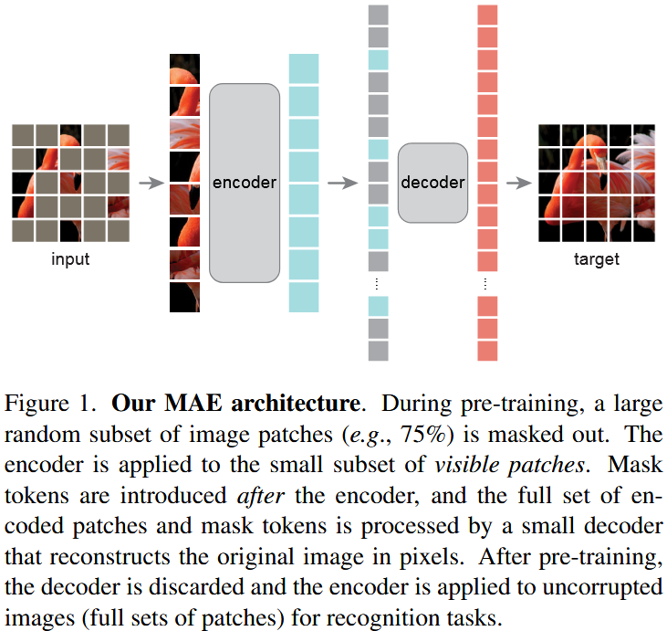

论文笔记 - Masked Autoencoders Are Scalable Vision Learners
1. Information
Title: Masked Autoencoders Are Scalable Vision
Learners
Link: MAE
Paper
Source: Conference on Computer Vision and Pattern
Recognition (CVPR)
Date: 2022
2. Summary
该论文提出了一种简单但有效的自监督学习方法——Masked Autoencoders (MAE)，用于视觉表示学习。其核心思想是：
- 随机屏蔽输入图像的一部分，并仅基于可见部分进行重建。
- 采用非对称的编码器-解码器架构：
- 编码器（encoder）仅处理未屏蔽的可见部分，不使用mask token。
- 解码器（decoder）使用轻量级设计，从编码表示和mask tokens恢复原始图像。
- 高屏蔽率（75%）提高训练效率和任务难度，促进模型学习有意义的视觉特征。
该方法实现了：
- 高效的训练（加速3倍以上），同时提高了模型的泛化能力。
- 在ImageNet-1K上，ViT-Huge 87.8% 最高精度，超越其他仅使用ImageNet-1K数据的方法。
- 在多个下游任务（目标检测、语义分割）中优于监督预训练，表现出良好的扩展性。
3. Background
深度学习模型对数据的需求不断增长，NLP领域已广泛采用自监督学习（SSL），例如：
- GPT系列（基于自回归建模）
- BERT（基于Masked Language Modeling）
然而，计算机视觉中的自监督学习进展相对滞后，原因包括：
- 架构差异：早期视觉模型主要是CNN，不适合直接引入mask tokens或位置编码。而ViT（Vision Transformer）的出现消除了这一障碍。
- 信息密度差异：
- NLP中的文本高度语义化，预测缺失单词可促进模型理解句子结构。
- 视觉数据存在空间冗余，许多缺失部分可通过邻近区域推断，降低了任务难度。
- 解码器的角色不同：
- NLP解码器生成语义丰富的词。
- 视觉解码器重建像素，导致学习到的特征更偏向低级信息。
4. Research Objective
- 探索Masked Autoencoders在计算机视觉中的可行性和扩展性。
- 设计高效的自监督学习方法，使其适用于大规模视觉任务。
5. Method

5.1 输入图像的 Masking 策略
- 将图像划分为固定大小（如16×16）的 patches（与 ViT 一致）。
- 随机屏蔽高比例的 patches（默认75%），保证剩余部分的信息密度足够高，以促进学习。
5.2 非对称编码器-解码器架构
- 编码器（Encoder）：
- 仅处理未被 mask 的 patches（不同于 BERT，它不会插入 mask tokens）。
- 采用标准 ViT，但计算量仅为完整 ViT 的 25%。
- 解码器（Decoder）：
- 仅在预训练阶段使用，采用轻量级设计。
- 输入包括编码器输出的 visible patches + mask tokens。
- 采用 Transformer 架构，最终输出重建的像素值。
5.3 重建目标（Reconstruction Target）
直接在像素空间（pixel space）计算均方误差（MSE）损失： \[ \mathcal{L}=\frac{1}{|\mathcal{M}|} \sum_{i \in \mathcal{M}}\left\|x_i-\hat{x}_i\right\|^2 \] 其中：
- \(\mathcal{M}\) 为被 mask 的 patch 集合。
- \(x_i\) 为原始图像 patch。
- \(\hat{x}_i\) 为模型重建的 patch。
该设计类似于传统去噪自编码器（Denoising Autoencoder, DAE），但更高效。
6. Conclusion
MAE 作为一种简单的自监督学习方法，在计算机视觉领域展现了与自然语言处理中 BERT 类似的可扩展性。通过高比例掩码策略和非对称编码器-解码器设计，MAE 能够高效地学习视觉表示，并在多种下游任务中超越监督预训练方法。此外，MAE 的像素级重建方法比基于标记的方法更简单、更高效，且不依赖于额外的预训练步骤。
论文笔记 - Masked Autoencoders Are Scalable Vision Learners
http://hellochuanyang.github.io/2025/03/02/论文笔记-Masked-Autoencoders-Are-Scalable-Vision-Learners/